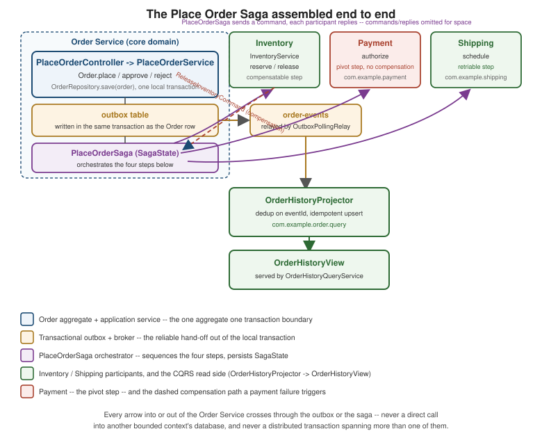

Putting It All Together: The Place Order Flow
|
This content was generated with the assistance of AI and should be verified against the official documentation before being relied on in production. |
Every other page in this section builds one piece of the running e-commerce domain in isolation: an aggregate, an
event, an outbox row, a saga step, a read model. None of them, on its own, shows what actually happens when a
single HTTP request comes in and the whole machine has to turn it into a delivered order. This page does exactly
that: it assembles the Order, Inventory, Payment, and Shipping bounded contexts, the transactional outbox,
the PlaceOrderSaga orchestrator, and the OrderHistoryView CQRS read model into one continuous walkthrough, twice — once for the happy path, once for the path where payment authorization fails — on the same Java 21 / Spring
Boot 4.1.x / Spring Data JPA / Spring Modulith 2.x / Spring for Apache Kafka 4.1.x baseline as the rest of this
section. No new pattern is introduced here and no class is redefined; every name below is exactly the one its
originating page already established, cross-referenced rather than repeated.
The running domain, assembled
Strategic Design's context map names five contexts:
Order as the core domain driving the checkout process, Inventory, Payment, and Shipping as
supporting subdomains it depends on as a customer depends on suppliers, and Customer as a generic subdomain
referenced only by CustomerId and never implemented. This page’s two walkthroughs exercise all four implemented
contexts together, coordinated by the PlaceOrderSaga orchestrator
Sagas already builds in full.

The complete package tree below is every class this page’s two walkthroughs touch, gathered from every prior page in this section into the one layout Structuring the Code establishes — nothing here is a new class, only a new arrangement of classes already shown in full elsewhere:
com.example.shared
├── CustomerId, ProductId, Money, Address // value objects -- see Value Objects
└── event
├── DomainEvent // marker interface -- see Domain Events
└── DomainEventEnvelope<T> // metadata envelope -- see Domain Events
com.example.order
├── domain // Order, OrderId, OrderLine, OrderStatus, OrderCreation, OrderRepository,
│ │ // PricingService -- see Entities, Aggregates, Repositories/Factories/Domain Services
│ └── event // OrderPlaced, OrderApproved, OrderRejected, OrderCancelled -- see Domain Events
├── application // PlaceOrderCommand, PlaceOrderService -- see Structuring the Code
├── infrastructure // OrderJpaEntity, OrderIdConverter, OrderLineEmbeddable, OrderRepositoryImpl,
│ │ // OutboxDomainEventPublisher, OutboxPollingRelay -- see Repositories/Factories/
│ │ // Domain Services, Entities, Value Objects, Transactional Outbox
│ └── acl // anticorruption-layer translators -- see Strategic Design
├── api // PlaceOrderController, PlaceOrderSagaCommandHandler, OrderPlacedNotifier,
│ // OrderPlacedProjectionHandler -- see Structuring the Code, Domain Events
├── saga // SagaState, SagaStatus, PlaceOrderSaga, ApproveOrderCommand, RejectOrderCommand
│ // -- see Sagas
└── query // OrderHistoryView, OrderHistoryProjector, OrderHistoryQueryService -- see CQRS
com.example.inventory // InventoryService, ReserveInventoryCommand, InventoryReserved,
// InventoryReservationFailed, ReleaseInventoryCommand, InventoryReleased -- see Sagas
com.example.payment // AuthorizePaymentCommand, PaymentAuthorized, PaymentAuthorizationFailed -- see Sagas
com.example.shipping // ScheduleShippingCommand, ShippingScheduled -- see SagasPlaceOrderSagaCommandHandler is the one name on that tree not spelled out in full anywhere else — it is the
inbound adapter Structuring the Code's hexagon figure
already names alongside OrderController, and both walkthroughs below use it for exactly the job that figure
already assigns it: receiving ApproveOrderCommand/RejectOrderCommand from PlaceOrderSaga and calling
order.approve()/order.reject(reason) through the same OrderRepository and DomainEventPublisher ports
PlaceOrderService already depends on, never a new port of its own.
The happy path, end to end
Placing an order that succeeds all the way through touches every layer this section has built, in the order the
sequence below lays out. PlaceOrderController here is the plain, synchronous shape — validate, call
PlaceOrderService, return 201 Created with a PlacedOrderResponse
(CQRS) — not the publish-first variant of the same controller name
Listen to Yourself shows for contrast; a service picks one
shape for PlaceOrderController, not both.
-
PlaceOrderController→PlaceOrderService. The controller builds aPlaceOrderCommandfrom the request body and callsPlaceOrderService.placeOrder(command)(Structuring the Code). -
Order.place(command). The static factory (Entities, Aggregates) builds the newOrderinAPPROVAL_PENDING, enforces the minimum-order-amount invariant, and returns anOrderCreation(order, List.of(new OrderPlaced(…))). -
Outbox insert, same local transaction.
PlaceOrderServicesaves theOrderrow throughOrderRepositoryand handsOrderPlacedtoOutboxDomainEventPublisher, which inserts oneoutboxrow (Transactional Outbox) — theOrderrow and the outbox row commit or roll back together, so there is no window where one exists without the other. -
Relay.
OutboxPollingRelay’s `@Scheduledsweep reads the unpublished row, publishes it to theorder-eventstopic keyed byorderId, and only then marks it published — the same at-least-once relay Transactional Outbox already walks through in full. -
PlaceOrderSagastarts. The orchestrator reacts toOrderPlaced, persists aSagaStateinRESERVING_INVENTORY, and sendsReserveInventoryCommandto Inventory (Sagas). -
Inventory, Payment, Shipping, in sequence.
InventoryService.reserve(…)commits its own local transaction and repliesInventoryReserved; the saga advances toAUTHORIZING_PAYMENTand sendsAuthorizePaymentCommand; Payment’s own handler (the same shape asInventoryService, not repeated on this page) repliesPaymentAuthorized, the saga’s pivot; the saga advances toSCHEDULING_SHIPPINGand sendsScheduleShippingCommand; Shipping repliesShippingScheduled. -
Order.approve(). The saga advances toORDER_APPROVEDand sendsApproveOrderCommandtoPlaceOrderSagaCommandHandler, which loadsOrderviaOrderRepository, callsorder.approve()(Entities), saves the now-APPROVEDorder, and publishesOrderApprovedthrough the same outbox as step 3. -
OrderHistoryProjectorupdates the CQRS view. The relay forwardsOrderApprovedthe same way it forwardedOrderPlaced;OrderHistoryProjectordedups on the envelope’seventIdand appliesOrderHistoryView.applyStatusChange("APPROVED", …)(CQRS) — a client pollingGET /order-history/{orderId}eventually observesstatus = "APPROVED", once the projector has caught up.
The payment-failure path: compensating and rejecting
The failure walkthrough shares everything up through inventory reservation with the happy path above — the
divergence starts the moment Payment replies PaymentAuthorizationFailed instead of PaymentAuthorized.
-
Steps 1-5 above run unchanged: the order is placed, the outbox relays
OrderPlaced, andPlaceOrderSagareserves inventory successfully, advancing toAUTHORIZING_PAYMENT. -
PaymentAuthorizationFailed. Payment’s own local transaction determines the charge cannot be authorized (an insufficient-funds decline, a fraud hold) and repliesPaymentAuthorizationFailed(orderId, reason)(Sagas) instead of committing an authorization. -
The saga’s
REJECTING_INVENTORYcompensation.PlaceOrderSaga.handle(PaymentAuthorizationFailed)loads the persistedSagaState, callsstate.onPaymentAuthorizationFailed(reply), which moves the state machine toREJECTING_INVENTORYand returnsList.of(new ReleaseInventoryCommand(orderId))— inventory reservation was a compensatable step, so committing it earlier is exactly what makes an explicit compensation necessary now; payment was never reached as a committed fact, so nothing about it needs undoing. -
Inventory releases its hold.
InventoryService.release(command)runs its own local transaction, releases the reservation made in step 6 of the happy path, and repliesInventoryReleased(Sagas). -
Order.reject(reason). The saga advances toORDER_REJECTEDand sendsRejectOrderCommand(orderId, reason)toPlaceOrderSagaCommandHandler, which loadsOrder, callsorder.reject(reason)(Entities) — movingOrderfromAPPROVAL_PENDINGstraight toREJECTED, the same state-machine transition Entities'sOrderStatusdiagram already draws — saves the now-REJECTEDorder, and publishesOrderRejectedthrough the outbox. -
The CQRS view reflects
REJECTED.OrderHistoryProjectorapplies the sameapplyStatusChange(…)path as the happy path’sOrderApproved, this time settingstatus = "REJECTED"— the read model needs no separate code path for a rejected order, because both outcomes are just a status transition applied to the sameOrderHistoryViewrow.
Notice what does not appear anywhere in that diagram: no distributed transaction spans Payment’s decline and Order’s rejection, and no step ever blocks waiting for another service’s lock — Why Not Distributed Transactions's whole argument is exactly why this compensating sequence, not a rolled-back cross-service transaction, is what a multi-step failure looks like once each bounded context owns its own database.
What to test, and where it is already sketched
Testing this assembled flow does not mean standing up all four services and a broker for every test — each layer already has a narrow, fast test sketched on its own page, and the checklist below is where to find it rather than a new suite to write from scratch.
| Level | What the test verifies | Already sketched on |
|---|---|---|
Aggregate unit tests ( |
|
|
Saga state-machine tests ( |
Given a starting |
|
Outbox / consumer idempotency tests |
A redelivered envelope (the same |
The dedup guard and |
CQRS projection tests |
|
|
Reading the table top to bottom also reads as the order in which a change to this flow is cheapest to verify: an aggregate-level regression is caught by the fastest, most isolated test in the list, and only a change to how the pieces are wired together — the saga’s sequencing, the outbox’s relay timing, the projector’s dispatch — needs a test that spans more than one class, never all of them running live at once for an ordinary unit-level check.